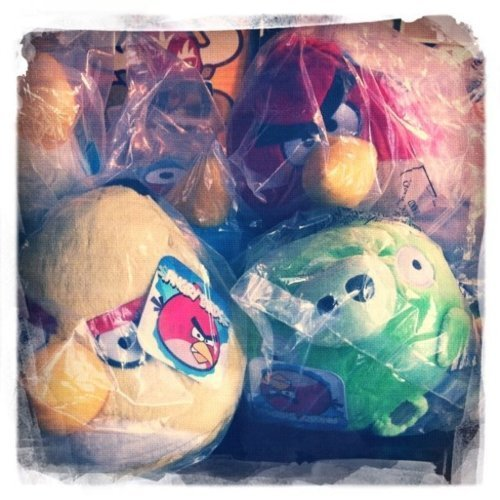

Wed, 16 Mar 2011 17:31:00 · AngryBirds · Games · china
i definitely paid way too much for certain plush

I definitely paid way too much for certain plush toys that are ordered from Europe sent via UK Royal Mail but were all made in Dongguan, China. Just the shipping alone cost me around €65! Don’t ask how much I paid when a friend told me that one can now easily bought the said toys on the street of Shanghai… argh!